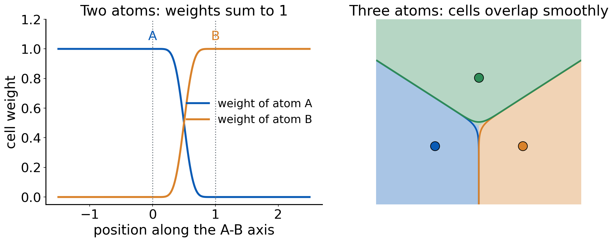
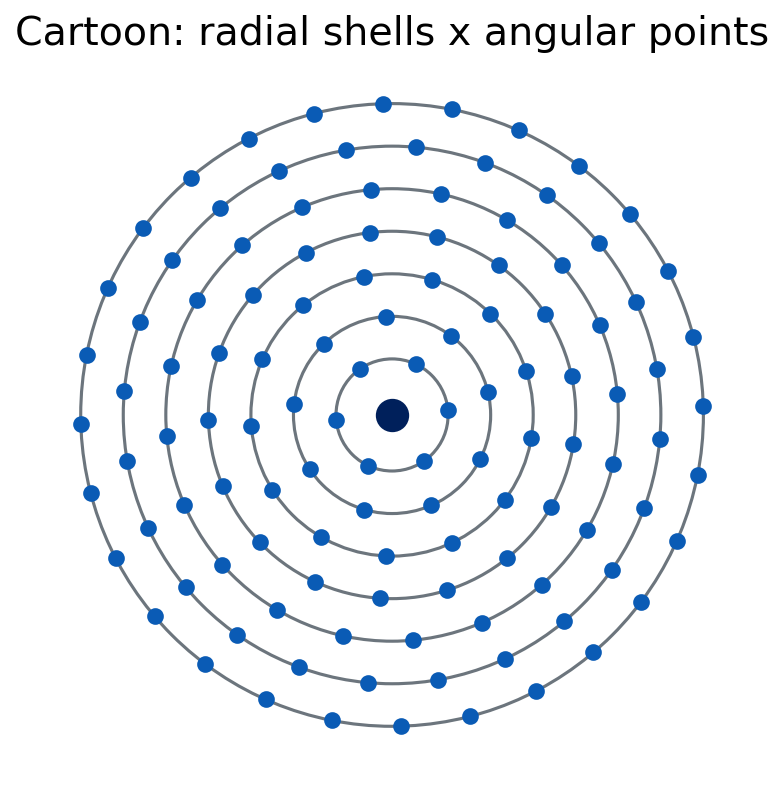
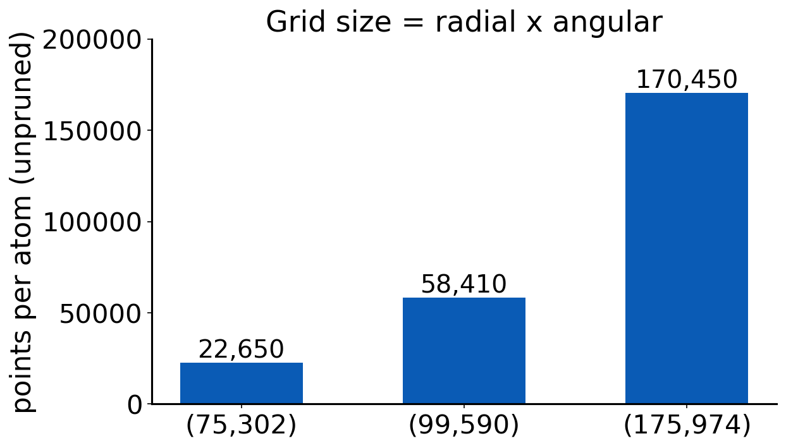

Lecture 11 · Debrief Exp. 6 · Numerical integration grids
How E_xc is integrated, why some functionals are grid-sensitive, and Experiment 7
Advanced Physical Chemistry · Florida Institute of Technology
Debrief: Experiment 6
Your results
[Live: open Class results → Experiment 6 heatmap]
- Error of B3LYP and B3LYP-D4 with each double-ζ set, relative to def2-TZVP
- Which cells did you flag in “Spot the anomaly”?
[Insert class plot: error by basis set]
[Insert class plot: Experiment 6 error of B3LYP and B3LYP-D4 with 6-31G*, def2-SVP, cc-pVDZ, pc-1, def2-TZVP for reactions 4a, 4b and 5b]
[Insert class plot: basis-size table]
[Insert class plot: number of basis functions of cyclohexene (and the other molecules) for each double-ζ set]
What you probably saw: three reactions, three stories
- 4a (Diels–Alder): the small Pople basis can look better than def2-TZVP. That is error cancellation
- 4b (hexane → neohexane): the sets give about the same errors
- 5b (CaO): the small basis is much worse
- Not all double-ζ sets perform alike, and their sizes differ
Why 6-31G* “wins” for 4a
- B3LYP alone has its own error for the reaction
- The small basis adds a basis-set error of different sign
- The sum happens to be small
- Converge the basis first: with def2-TZVP you see B3LYP’s error without the compensating basis error
-D4 with a small basis
- -D4 was fitted for functionals with large basis sets
- With a small basis, BSSE already adds attraction
- Adding -D4 on top can double-count and overbind
- Check: do the dispersion-corrected small-basis results look “too good” or too attractive?
Compare at a converged basis first. A small basis can look good only when two wrongs cancel.
Numerical integration grids
Why a grid at all?
\[ E_{xc}[\rho] = \int f\big(\rho(\mathbf{r}),\nabla\rho,\tau,\dots\big)\,d\mathbf{r} \]
- The integrand is a complicated nonlinear function of ρ
- No closed form: integrate numerically, on a set of points with weights
- The Coulomb and HF exchange parts of the energy are analytic and do not use this grid
Atoms in a molecule: the multicenter problem
- Density is sharply peaked at every nucleus
- A single grid around one center cannot resolve all cusps
- Becke’s idea (1988): split space into atomic cells, one integral per atom [Becke 1988]
- Each atom integrates its share of every point with a weight
Becke cell weights

- Weight of atom A at a point: smooth, between 0 and 1
- Weights of all atoms sum to 1 at every point
- Smooth, not sharp, so the integrand stays well behaved
Becke’s switching function
\[ f(\mu)=\tfrac{3}{2}\mu-\tfrac{1}{2}\mu^{3},\qquad \mu_{AB}=\frac{r_A-r_B}{R_{AB}} \]
- Apply f three times, then s(μ) = ½ (1 − f(f(f(μ))))
- Atom weight = product of s over all other atoms, normalized
- The figure on the previous slide is exactly this
Each atom: radial shells times angular points

- Radial: N_r shells (quadrature in r)
- Angular: N_ang points on each sphere, Lebedev quadrature
- Notation: (75,302) means 75 radial shells, 302 angular points
- Total points per atom = N_r × N_ang before pruning
How many points?

- Cost grows with the number of points
- Pruning cuts angular points near the nucleus and far away
- Pruned grids are cheaper, with a modest loss
Grids in Q-Chem
XC_GRID |
Name | Idea |
|---|---|---|
| 1 | SG-1 | small, pruned, fast |
| 2 | SG-2 | larger, pruned, roughly (75,302) class |
| 3 | SG-3 | largest of the three, roughly (99,590) class |
- Explicit grids can be given as an integer pair, e.g. (99,590)
- HF needs no exchange-correlation grid
- Rotational variance: a small grid is not invariant: rotate the molecule and the energy changes
Who is grid-sensitive?
- LDA and GGA: smooth integrands, converge on small grids
- Meta-GGAs (depend on τ): more structure, need bigger grids [Wheeler and Houk 2010]
- Heavily parametrized functionals (Minnesota family) have flexible forms that oscillate [Morgante and Peverati 2020]
- Nonlocal VV10 uses its own grid too
Quick question
An energy curve of a weakly bound dimer wiggles with several minima.
Physical, or numerical?
Numerical noise, if it changes when you make the grid denser. A real potential has one well; extra minima that move or vanish with the grid are artifacts.
The practical rules
- Do not rely on defaults
- For meta-GGAs and Minnesota functionals use at least a large grid; test convergence
- Always report the grid
- Cost grows with grid size, but for small molecules the penalty is modest
The grid is part of the method. A functional’s result without its grid is not reproducible.
Experiment 7 briefing
Goal
Experiment 7: Integration Grids: The Argon Dimer
- Compute the Ar₂ dissociation curve with several functionals and grids
- Look for wiggles. Decide which are numerical
The system
- Ar₂ at 31 distances from 3.0 to 6.0 Å, step 0.1 Å, plus the Ar atom
- Interaction energy: ΔE(r) = E(Ar₂(r)) − 2 E(Ar)
- Reference well depth about −0.28 kcal/mol at roughly 3.75 Å
- def2-TZVP basis for all jobs (SG-3 with def2-QZVP would hit the 10-minute limit)
Setup
- Functionals: B3LYP, M06-L, M11-L, M11, ωB97M-V
- Grids:
XC_GRID 1(SG-1),2(SG-2),3(SG-3) - 5 functionals × 3 grids × 32 species = 480 jobs: seconds with SG-1, minutes with SG-2/SG-3
- Reaction energies are computed for you automatically (
auto_delta)
480 jobs: how to survive
- Start with one functional, one grid, all distances
- Batch the submissions and keep a checklist
- Do not rename output files by hand. The script reads the job from its echoed input
- Check for jobs that did not converge before you extract
Extracting the results
- Script:
extract_ex07.py, Python 3.8+, standard library only - It reads your Q-Chem outputs locally and writes
ex07_results.csv - On the Experiment 7 page use Import CSV in the results form
- Failed jobs have no energy in the CSV
Instructions are in the “Extracting results” section of the Experiment 7 page.
The wiggle report
- The page flags suspicious curves
- You explain: numerical or physical? which grid fixes it?
- Report the minimum grid each functional needs
Figure from the experiment page

VSXC functional on the Ar dimer with different grids (from the Experiment 7 handout).
Predictions to lock
- Which functional will be the most grid-sensitive?
- Which grid will be enough for B3LYP?
- Will a bigger grid cost much extra time?
References
- Becke, A. D. J. Chem. Phys. 88 (1988): multicenter numerical integration.
- Wheeler, S. E.; Houk, K. N. J. Chem. Theory Comput. 6 (2010): integration grids and meta-GGAs.
- Morgante, P.; Peverati, R. Int. J. Quantum Chem. 120 (2020): undervalued aspects of DFT.

CHM 5111 · Advanced Physical Chemistry · Florida Institute of Technology